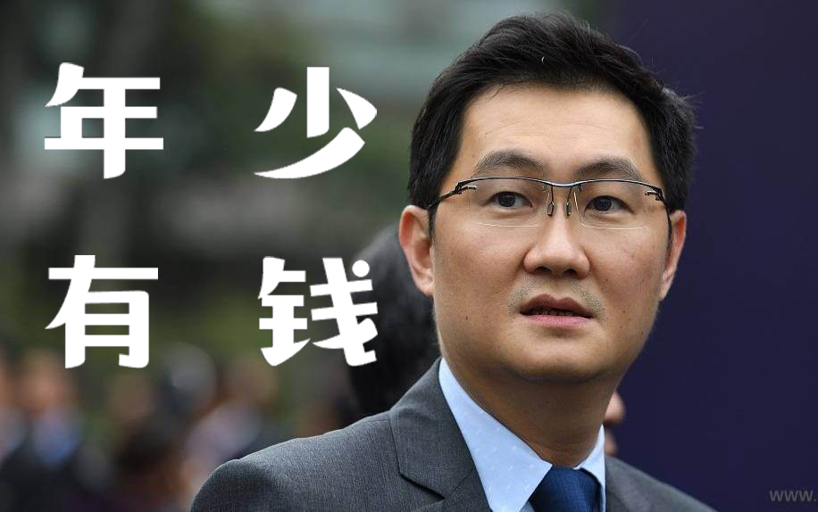

互联网行业精英代表
马化腾

个人简介
马化腾，汉族，1971年10月29日生于广东省东方县八所港（今属海南省东方市），祖籍广东省汕头市潮南区 。1993年获深圳大学理学学士学位。腾讯公司主要创办人之一。现任腾讯公司董事会主席兼首席执行官；全国青联副主席；全国人大代表。1984年随父母从海南迁至深圳，1993年毕业于深圳大学计算机系。同年进入深圳润迅通讯发展有限公司开始寻呼系统的研究开发工作。1995年创建惠多网深圳站，名为ponysoft。
1998年，马化腾和同学张志东注册成立"深圳市腾讯计算机系统有限公司"，随后陈一丹、许晨晔、曾李青相继加入。
2017年8月7日，腾讯股价盘中再创历史新高价320.6港元，马化腾身家361亿美元成为中国首富。2018年4月，获《时代周刊》2018年全球最具影响力人物荣誉。 2018年10月25日，福布斯发布了2018福布斯中国400富豪榜，马化腾凭借328亿美元的身家蝉联榜单第二名。2018年12月18日，党中央、国务院授予马化腾同志改革先锋称号，颁授改革先锋奖章。2019年3月，马化腾以388亿美元财富排名2019年福布斯全球亿万富豪榜第20位。2019年9月5日，突破奖基金会及其赞助人——马化腾等人共同宣布2020年突破奖及新视野奖的获得者。2019福布斯中国慈善榜排名第4位。2019年10月19日，入选2019福布斯年度商业人物之跨国经营商业领袖名单。2019年11月7日，以2,545.50亿元财富值位列2019福布斯中国400富豪榜第2名。2020年11月9日，财付通支付科技有限公司发生工商变更，马化腾退出法定代表人职务。
创业经历

1993年从深大毕业后，马化腾进入深圳润迅公司，开始做软件工程师。1997年，马化腾第一次认识了ICQ。一见面，他便被其无穷的魅力所吸引，就立即就注册了一个号。可是使用了一段时间，他觉得英文界面的ICQ在中文用户中想推广开来不是一件容易的事儿。于是他想，自己能否做个类似于ICQ的中文版本工具呢?
1998年11月，马化腾与同学张志东合作，在深圳注册了深圳的腾讯计算机系统有限公司，决定开发一个中文ICQ软件。从此，他踏上了创业征途。
跟其他刚开始创业的互联网公司一样，资金和技术是腾讯最大的问题。“先是缺资金，资金有了软件又跟不上”。1''999年初，腾讯开发出第一个“中国风味”的ICQ，即腾讯“QQ”，受到用户欢迎。在马化腾为资金犯难的时候，他起了要把QQ卖掉的想法，先后和四家公司谈判，都以失败告终。马化腾只好四处去筹钱。1999年下半年，从美国到中国，互联网开始升温，受昔自老友丁磊海外融资的启发，马化腾拿着改了6次的版本、20多页的商业计划书开始寻找国外风险投资，最后碰到了IDG和盈科数码，他们给了QQ220万美元的投资。从此，新的一轮创业开始。截至2004年9月，腾讯QQ总注册用户数为3.55亿，活跃用户数1.19亿，QQ最高同时在线730万、QQ游戏最高同时在线78万，跃居中国第一大休闲游戏门户。
马化腾的经营哲学是：“三问自己”。
一问：这个新的领域你是不是擅长?他的竞争对手多半对商务、利润、资本感兴趣，却不一定能把握客户的真正需求;而马化腾凭着对网络市场一种朦胧却又相当有预见性的理解，用近乎偏执的兴趣和近乎狂热的工作热情搭起腾的架子，牢固坚持以技术为核心的公司理念，专注于技术开发和提升质量，当然能高出对手一筹。
二问：如果你不做，用户会损失什么吗?做软件工程师的经历使马化腾明白，开发软件的意义就在于实用，而不是写作者的自娱自乐：“其实我只是个很爱网络生活的人，知道网迷最需要什么，所以为自己和他们开发最有用的东西，如此而已。”
三问：如果做了，在这个新的项目中自己能保持多大的竞争优势?1999下半年，腾讯在网络寻呼系统市场上越做越大，淘到大桶“金银气然而，也面临着重大选择：一方面寻呼行业在走下坡路;另一方面，腾讯的QQ用户数达到了100万，而且还在迅猛增长。早先，QQ只是作为公司的一个副产品存在的，马化腾对QQ所蕴含的巨大市场价值并没有足够的认识。而且无论从技术上还是资金上，他对自己究竟能保持多大的竞争优势并没有把握。当时，腾讯所采取的策略是“三管齐下?：-方面继续巩固传统网络寻呼系统带来的大量利润;‘另一方面将精力集中在改进QQ功能和开发新版本上;再一方面寻找风险投资的支持。事实证明，这样的策略是正确的。